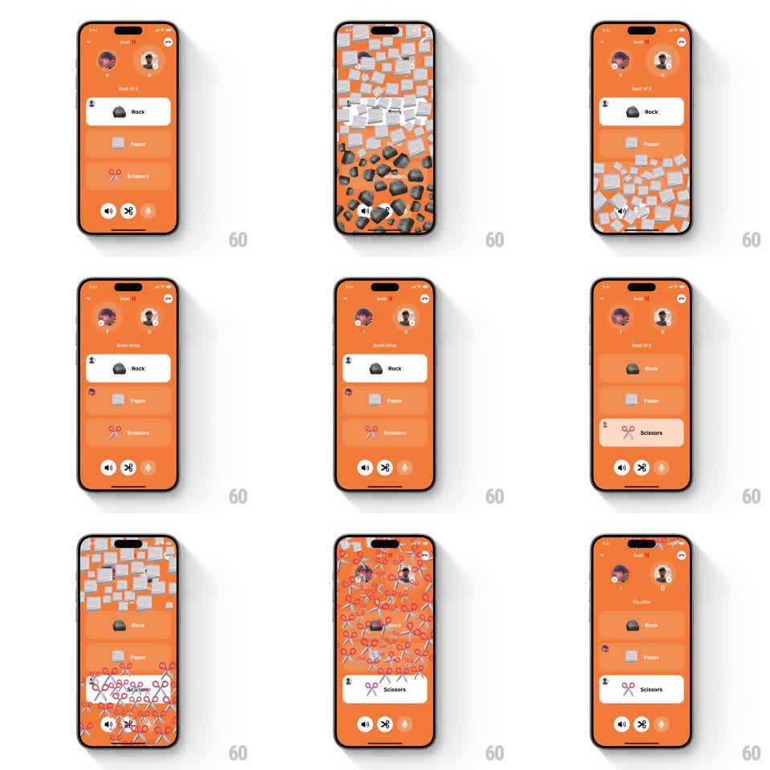

Media
Frame-by-frame

Rebuild this interaction 1:1: Honk's rock-paper-scissors - picking a move rains that move's emoji down the screen with physics, the round result banner appears, and the winner's score badge increments with a springy pop.

Rebuild this interaction 1:1: Honk's rock-paper-scissors - picking a move rains that move's emoji down the screen with physics, the round result banner appears, and the winner's score badge increments with a springy pop.
## Integration
Integration: stack-agnostic spec - springs given as stiffness/damping, timed motions as duration + curve; map every value to your framework and animation library of choice.
## Scene
Full-bleed orange game screen: two player avatars with score badges at the top, "Best of 5" header, and three option rows - Rock, Paper, Scissors - the available ones bright white, spent ones dimmed. Bottom toolbar carries speaker, scissors, and fire icons. A round drop fills the screen with falling rocks or scissors.
## Motion spec
Pattern: physics emoji rain keyed to the picked move.
- Tap a move: the row flashes (background to orange tint, 150ms) and 40-60 of that move's emoji spawn along the top edge, falling with gravity (~2000pt/s2), tumbling (+-360deg), bouncing off the bottom (restitution ~0.35) and piling briefly before draining/fading (last 600ms of a ~2s life).
- While the drop runs, the opponent's choice resolves and a result banner ("Brett Wins" / "You Win") slides into the header area (spring ~300/20, 300ms).
- The winner's score badge under their avatar increments: the number swaps with a pop (scale 1 -> 1.4 -> 1, spring ~340/13) and a small "+1" floats up (translateY -20pt, fade, 500ms).
- The played move's row dims to its spent state (opacity 0.4, 200ms); remaining moves stay bright.
- Consecutive rounds repeat with the other emojis (scissors rain red-and-silver scissor emojis).
## Calibration
- The drop density should nearly bury the option rows at peak, then clear fully before the next pick.
- Score pop and banner land together at round resolution - one beat, not two.
## Reduced motion
A short emoji row slides across the top (600ms); banner and score update instantly.
## Don't miss
- Emoji identity matches the move exactly: rocks for Rock, scissors for Scissors, papers for Paper.
- The orange background and dimming of spent rows carry the round progression - keep them strict.